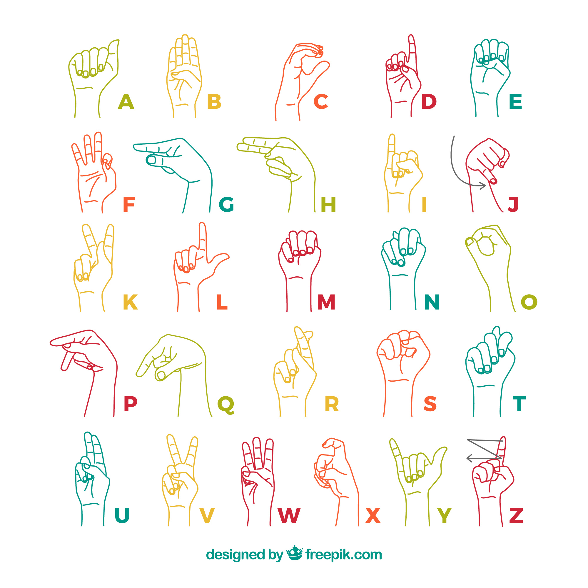

Cette page a été réalisée dans le cadre du cours "Technologies de l'information et de la communication".
Bienvenue sur ma page HTML ! Je m'appelle Margaux, j'ai terminé mon bachelor en communication multilingue avec la combinaison linguistique FR-en-lsf à la Faculté de traduction et interprétation (FTI) de Genève en juin 2024 et je suis actuellement étudiante en première année de MATECH à la FTI.
Aujourd’hui, dans le monde, le nombre de personnes sourdes est estimé à 70 millions. La JOURNEE INTERNATIONALE DES LANGUES DES SIGNES a lieu chaque année le 23 septembre. Contrairement aux idées reçues, la langue des signes n’est pas universelle et peut varier d’un pays à l’autre, voire d’une région à l’autre. Il en existerait pas moins de 300 dans le monde entier ! En Suisse, par exemple, trois langues des signes différentes sont utilisées par environ 20'000 personnes (2017) : la langue des signes française (LSF), la Deutschschweizer Gebärdensprache (DSGS) et la Lingua dei Segni Italiana (LIS), Cependant, bien que des progrès aient été réalisés grâce au mouvement du « Réveil Sourd », qui a mis fin à une longue période d’interdiction des langues des signes en Europe, de 1880 à 1980 environ, leur reconnaissance juridique n’est toujours pas garantie dans tous les pays, comme c’est encore le cas en Suisse. Cette journée est essentielle tant pour la protection linguistique, la promotion de l’identité et de la diversité culturelle, que pour l’obtention de la reconnaissance juridique, la sensibilisation aux langues des signes et l’importance de l’implication de la communauté sourde dans la société et les décisions. Grâce à ce combat, les langues des signes ont, par exemple, été inscrites au patrimoine culturel immatériel de l’UNESCO en 2023.
Sources: https://www.sgb-fss.ch/fr/ et https://www.un.org/fr/observances/sign-languages-day
